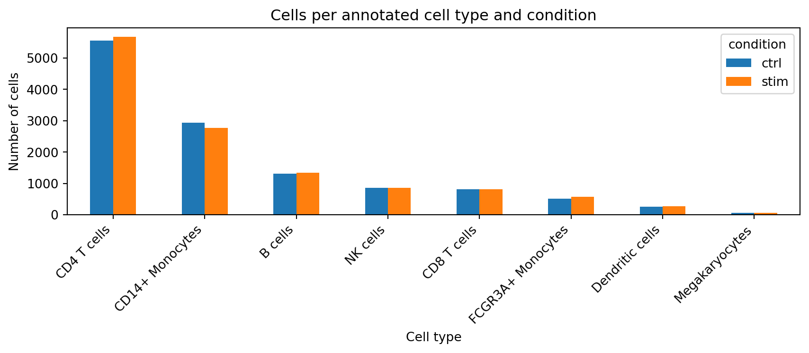
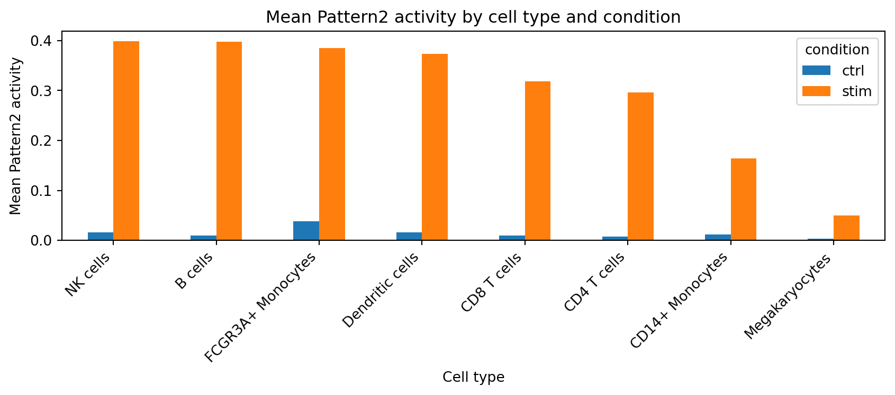

{kind=link}
from __future__ import annotations
from pathlib import Path
import json
import platform
import sys
import anndata as ad
import matplotlib.pyplot as plt
import numpy as np
import pandas as pd
from scipy import sparseBiomedical Open Case Studies: Finding latent immune-response programs in single-cell RNA-seq with CoGAPS
Disclaimer
The purpose of the Open Case Studies project is to demonstrate the use of various data science methods, tools, and software in the context of messy, real-world data. A given case study does not cover all aspects of the research process, is not claiming to be the most appropriate way to analyze a given data set, and should not be used in the context of making policy decisions without external consultation from scientific experts. In addition, due to size constraints, datasets used within a case study may be subset of the original/full dataset.
License information
This work is licensed under the Creative Commons Attribution-NonCommercial 4.0 (CC BY-NC 4.0) United States License.
This work is funded through the National Institutes of Health, specifically the National Institute of General Medical Sciences: Grant Number 1R25GM160622.
To access the GitHub repository for this case study, see oothomas/ocs-bio-pycogaps-case-study-4.
The draft data files included with this first-pass project are cached analysis objects and results derived from a processed PBMC single-cell RNA-seq dataset. The default learner path uses these cached files:
| File | Purpose |
|---|---|
data/processed/preprocessed_cells_hvg3000.h5ad |
Processed cells x genes AnnData object |
data/processed/cogaps_input_genesxcells_hvg3000_float64.h5ad |
Optional cached genes x cells CoGAPS input |
data/results/cogaps_K7_seed2_iter2000.h5ad |
Saved chosen CoGAPS model |
data/results/pattern_gene_weights.tsv.gz |
Lightweight exported gene-weight matrix for render-safe fallbacks |
data/results/pattern_cell_activities.tsv.gz |
Lightweight exported cell-activity matrix for render-safe fallbacks |
data/results/pattern_gene_directionality_global.csv |
Targeted directionality results for top pattern genes |
The main case-study workflow does not require a cluster. Learners can complete the case study by loading the saved chosen model. If the large chosen-model file is not available, most interpretation steps can still be completed from the lightweight exported pattern tables. Running one local CoGAPS model is included as an optional exercise and may take substantial time depending on the learner’s computer.
The full SLURM sweep used to justify the chosen K is documented as optional instructor or advanced-user material in the Additional Information section.
To cite this case study, please use:
{Authors to be finalized}. {(YEAR)}. Finding latent immune-response programs in single-cell RNA-seq with CoGAPS. {Final GitHub source URL}. {Version}.
This draft case study uses the PBMC IFN-beta stimulation single-cell RNA-seq dataset from Kang et al. and introduces CoGAPS using the CoGAPS and scCoGAPS method literature. Full citation metadata should be finalized before publication.
Motivation
Single-cell RNA-seq lets us measure gene expression in thousands of individual immune cells. That resolution is powerful, but it also creates a challenge: each cell reflects both what type of cell it is and what biological processes are active inside it.
In this case study, we work with peripheral blood mononuclear cells (PBMCs) measured in control and IFN-beta stimulated conditions. IFN-beta stimulation is expected to activate interferon-stimulated genes, but the response does not happen in a vacuum. B cells, T cells, NK cells, monocytes, dendritic cells, and other PBMC populations all have their own baseline identities.
This creates a motivating question: can we find latent gene-expression programs that separate a broad stimulation response from cell-type-linked structure?
We will use CoGAPS, a Bayesian non-negative matrix factorization method, to represent the data as patterns. Each pattern has genes that define it and cells where it is active. We will then ask whether the strongest IFN-associated pattern is supported by the genes we expect, and whether those genes are up or down in stimulation.
Latent program
A hidden pattern of coordinated gene expression inferred from the data. In this case study, a latent program may reflect immune-cell identity, stimulation-associated activity, or a mixture of both.
Directionality
Whether a gene has higher or lower expression in one condition compared with another. CoGAPS pattern weights identify genes associated with a pattern, but expression direction must be estimated separately from the count data.
The figure at the top of the page previews one of the main results: a CoGAPS pattern associated with IFN-beta stimulation is active across several PBMC cell types, but the activity is not uniform. The rest of this case study shows how we get to that result, how we interpret it, and where we need to be cautious.
This dataset tests IFN-beta stimulation in PBMCs. If these genes are discussed in relation to dengue or other viral contexts, that interpretation should be framed as relevance to interferon and inflammatory biology, not as direct evidence of dengue infection in this dataset.
Main Question
Our main question(s)
- What latent transcriptional programs are present in IFN-beta stimulated and control PBMC single-cell RNA-seq data?
- Can CoGAPS help distinguish broad stimulation-associated activity from cell-type-linked immune programs?
- Which genes define the strongest IFN-associated pattern, and are those genes up or down in stimulation?
- How does the IFN-associated pattern vary across annotated PBMC cell types?
Learning Objectives
In this case study, we will use a processed single-cell RNA-seq dataset from PBMCs exposed to IFN-beta stimulation to learn how latent-variable methods can identify gene-expression programs that are not captured by cell-type labels alone.
We will load and inspect an AnnData object, prepare a CoGAPS input matrix, use a previously selected K = 7 model, interpret pattern activities and gene weights, and perform a targeted directionality check for genes that define the main pattern.
The skills, methods, and concepts that students will be familiar with by the end of this case study are:
Data Science/Bioinformatics Learning Objectives:
- Load and inspect single-cell RNA-seq data stored as an AnnData object.
- Summarize cell metadata, including condition, replicate, and cell-type annotations.
- Explain why CoGAPS uses a genes x cells input matrix and construct or load that matrix.
- Run one non-distributed chosen-
KCoGAPS model or load the saved chosen-model result. - Extract CoGAPS
AandPmatrices and connect them to gene weights and cell activities. - Generate top-gene tables, pattern activity summaries, and directionality tables.
- Create visualizations that summarize latent pattern activity across conditions and cell types.
Statistical Learning Objectives:
- Describe how latent-factor methods can represent each cell as a mixture of multiple transcriptional programs.
- Explain why rank choice matters and how
K = 7was selected from a limited sweep. - Distinguish CoGAPS pattern membership from expression directionality.
- Interpret paired pseudobulk log2 fold-change summaries for targeted pattern genes.
- Separate descriptive evidence from formal hypothesis testing and pathway validation.
Biological/Topical Learning Objectives:
- Describe the PBMC IFN-beta stimulation setting and why it is useful for studying immune-response programs.
- Identify canonical interferon-stimulated genes that anchor the main IFN-associated CoGAPS pattern.
- Compare identity-like and activity-like interpretations of latent patterns.
- Describe how the IFN-associated pattern varies across PBMC cell types.
- Explain why dengue-related interpretation, if discussed, must be framed through IFN/inflammatory relevance rather than direct infection evidence.
Packages
We will begin by loading the Python packages that we need for this case study.
| Package | Use |
|---|---|
anndata |
Read and write AnnData .h5ad files |
pandas |
Summarize metadata, pattern tables, and directionality outputs |
numpy |
Matrix and numerical operations |
scipy |
Sparse matrix handling and statistical summaries |
matplotlib |
Plot figures used in the case study |
PyCoGAPS |
Optional local CoGAPS model execution |
We will also define paths and helper functions that will be reused across sections.
def find_project_root(start: Path) -> Path:
for path in [start, *start.parents]:
if (path / "index.qmd").exists() and (path / "data").exists():
return path
raise FileNotFoundError("Could not locate the case-study project root.")
ROOT = find_project_root(Path.cwd())
PREPROCESSED_H5AD = ROOT / "data/processed/preprocessed_cells_hvg3000.h5ad"
COGAPS_INPUT_H5AD = ROOT / "data/processed/cogaps_input_genesxcells_hvg3000_float64.h5ad"
PREPROCESS_CONFIG_JSON = ROOT / "data/processed/preprocess_config_hvg3000.json"
CHOSEN_RESULT_H5AD = ROOT / "data/results/cogaps_K7_seed2_iter2000.h5ad"
CHOSEN_METRICS_JSON = ROOT / "data/results/cogaps_K7_seed2_iter2000.metrics.json"
SUMMARY_BY_K_CSV = ROOT / "data/results/summary_by_K.csv"
PER_RUN_METRICS_CSV = ROOT / "data/results/per_run_metrics.csv"
DIRECTION_GLOBAL_CSV = ROOT / "data/results/pattern_gene_directionality_global.csv"
DIRECTION_CELLTYPE_CSV = ROOT / "data/results/pattern_gene_directionality_by_celltype.csv"
DIRECTION_SUMMARY_CSV = ROOT / "data/results/pattern_direction_summary.csv"
PATTERN_GENE_WEIGHTS_TSV_GZ = ROOT / "data/results/pattern_gene_weights.tsv.gz"
PATTERN_CELL_ACTIVITIES_TSV_GZ = ROOT / "data/results/pattern_cell_activities.tsv.gz"
PATTERN_CELL_ACTIVITIES_WITH_METADATA_CSV_GZ = ROOT / "data/results/pattern_cell_activities_with_metadata.csv.gz"
PATTERN_TOP_GENES_CSV = ROOT / "data/results/pattern_top_genes.csv"
PATTERN_CORRELATIONS_CSV = ROOT / "data/results/pattern_correlations.csv"
PATTERN_ACTIVITY_BY_CELLTYPE_CONDITION_CSV = ROOT / "data/results/pattern_activity_by_celltype_condition.csv"
PATTERN_ACTIVITY_BY_REPLICATE_CONDITION_CSV = ROOT / "data/results/pattern_activity_by_replicate_condition.csv"
PATTERN_SUMMARY_CSV = ROOT / "data/results/pattern_summary.csv"
CHOSEN_K = 7
CHOSEN_SEED = 2
CHOSEN_ITER = 2000
STIM_LABEL = "stim"
HAS_CACHED_COGAPS_INPUT = COGAPS_INPUT_H5AD.exists()
HAS_CHOSEN_RESULT = CHOSEN_RESULT_H5AD.exists()
HAS_LIGHTWEIGHT_PATTERN_MATRICES = (
PATTERN_GENE_WEIGHTS_TSV_GZ.exists() and PATTERN_CELL_ACTIVITIES_TSV_GZ.exists()
)
HAS_LIGHTWEIGHT_ACTIVITY_METADATA = PATTERN_CELL_ACTIVITIES_WITH_METADATA_CSV_GZ.exists()
HAS_PATTERN_TOP_GENES = PATTERN_TOP_GENES_CSV.exists()
HAS_PATTERN_CORRELATIONS = PATTERN_CORRELATIONS_CSV.exists()
HAS_PATTERN_ACTIVITY_BY_CELLTYPE = PATTERN_ACTIVITY_BY_CELLTYPE_CONDITION_CSV.exists()
HAS_PATTERN_SUMMARY = PATTERN_SUMMARY_CSV.exists()
ANALYSIS_MODE = (
"full_chosen_result"
if HAS_CHOSEN_RESULT
else "lightweight_derived"
if HAS_LIGHTWEIGHT_PATTERN_MATRICES
else "unavailable"
)def pattern_columns(df: pd.DataFrame) -> list[str]:
return sorted(
[c for c in df.columns if str(c).startswith("Pattern")],
key=lambda value: int(str(value).replace("Pattern", "")),
)
def top_genes_from_matrix(A: pd.DataFrame, pattern: str, n: int = 15) -> pd.DataFrame:
top = A[pattern].sort_values(ascending=False).head(n)
top_df = top.rename("weight").reset_index()
top_df.columns = ["gene", "weight"]
return top_df
def load_lightweight_pattern_matrices() -> tuple[pd.DataFrame, pd.DataFrame]:
A = pd.read_csv(PATTERN_GENE_WEIGHTS_TSV_GZ, sep="\t", compression="gzip").set_index("gene")
P = pd.read_csv(PATTERN_CELL_ACTIVITIES_TSV_GZ, sep="\t", compression="gzip").set_index("cell_barcode")
return A, P
def build_cogaps_input(preprocessed_cells: ad.AnnData) -> ad.AnnData:
cogaps_input = preprocessed_cells.T.copy()
X = cogaps_input.X.toarray() if sparse.issparse(cogaps_input.X) else cogaps_input.X
cogaps_input.X = np.asarray(X, dtype=np.float64)
cogaps_input.var = preprocessed_cells.obs.copy()
cogaps_input.var_names = preprocessed_cells.obs_names.copy()
cogaps_input.obs = preprocessed_cells.var.copy()
cogaps_input.obs_names = preprocessed_cells.var_names.copy()
return cogaps_inputContext
PBMCs and IFN-beta stimulation
Peripheral blood mononuclear cells are a mixture of immune cell types, including T cells, B cells, NK cells, monocytes, dendritic cells, and other populations. When PBMCs are exposed to IFN-beta, many cells are expected to activate interferon-stimulated genes. However, those cells do not stop being T cells, B cells, monocytes, or dendritic cells.
This means that a single-cell RNA-seq experiment contains multiple layers of structure at the same time:
- stable immune-cell identity
- stimulation-associated activity
- donor and technical variation
- gene programs shared across several cell types
The dataset used here comes from a published PBMC perturbation study in which cells from eight lupus patients were profiled in control and IFN-beta stimulated conditions. The original study reported broad stimulation-associated transcriptional responses as well as cell-type-specific response structure.
Why latent-variable analysis?
Clustering is useful for identifying groups of similar cells, but clustering alone can make it difficult to study biological programs shared across several cell types. A stimulation response can cut across cell-type boundaries. A latent-variable model gives us another view: instead of assigning each cell to one group, we can represent each cell as a mixture of patterns.
Identity-like and activity-like programs
An identity-like program is strongly tied to a cell type or compartment. An activity-like program reflects a biological process that can be active across multiple cell types, such as a stimulation response.
What does CoGAPS do?
CoGAPS is a Bayesian non-negative matrix factorization method. In this case study, we use it to decompose a genes x cells expression matrix into two linked matrices:
CoGAPS A matrix
The gene-by-pattern matrix. Larger values indicate genes that contribute more strongly to a pattern.
CoGAPS P matrix
The pattern-by-cell matrix. Larger values indicate cells with stronger activity for a pattern.
In this case study, the most important pattern is Pattern2. It is strongly associated with IFN-beta stimulation and is anchored by canonical interferon-stimulated genes. We will also inspect other patterns, but those interpretations will be more cautious.
What are the data?
We will use a processed subset of the PBMC IFN-beta stimulation single-cell RNA-seq dataset from Kang et al. The student-facing analysis object contains 24,673 cells and 3,000 highly variable genes. Each cell has metadata for condition, annotated cell type, and donor/replicate.
| Object or variable | Details |
|---|---|
preprocessed_cells_hvg3000.h5ad |
Cells x genes AnnData object used for the main learner workflow |
condition |
Experimental condition: ctrl or stim |
cell_type |
Annotated PBMC cell type |
replicate |
Donor or patient replicate label |
.layers["counts"] |
Count layer used for targeted pseudobulk directionality |
cogaps_input_genesxcells_hvg3000_float64.h5ad |
Genes x cells matrix prepared for CoGAPS |
cogaps_K7_seed2_iter2000.h5ad |
Saved chosen CoGAPS result used by the default path |
pattern_gene_weights.tsv.gz |
Lightweight exported CoGAPS gene-weight (A) matrix |
pattern_cell_activities.tsv.gz |
Lightweight exported CoGAPS cell-activity (P) matrix |
pattern_cell_activities_with_metadata.csv.gz |
Cell-level pattern activities joined to key metadata and embeddings |
pattern_top_genes.csv |
Top weighted genes per pattern from the chosen model |
pattern_correlations.csv |
Pattern correlations with the stimulation indicator |
pattern_activity_by_celltype_condition.csv |
Mean and median pattern activity summaries by cell type and condition |
pattern_summary.csv |
Compact per-pattern interpretation table for lightweight renders |
pattern_gene_directionality_global.csv |
Targeted global stim-vs-ctrl directionality for top pattern genes |
pattern_gene_directionality_by_celltype.csv |
Targeted cell-type directionality for top pattern genes |
The local processed object is sparse: about 96 percent of entries are zero. This is typical for single-cell RNA-seq and is one reason that careful preprocessing and interpretation are important.
The case study starts from cached files so learners can focus on latent-variable analysis and interpretation rather than full raw-data processing. For GitHub and other lightweight render contexts, the smaller exported pattern tables allow most of the biological interpretation to remain available even when the large chosen-model .h5ad file is absent.
Limitations
There are some important considerations regarding this data analysis to keep in mind:
- This case study uses a processed AnnData object with 3,000 highly variable genes rather than a full workflow from raw sequencing files or all measured genes.
- The chosen CoGAPS rank,
K = 7, comes from a limited completed sweep and should be described as a local model-selection decision rather than a universal optimum. - The main learner workflow loads a saved chosen model by default because running even one CoGAPS model can take substantial time.
- CoGAPS pattern weights identify genes associated with latent programs, but up/down regulation must be assessed separately using expression contrasts.
- The directionality analysis is targeted to top pattern genes and is not a genome-wide differential-expression analysis.
- Cell-type heterogeneity summaries are descriptive unless additional donor-aware inference is added.
- The dataset tests IFN-beta stimulation in PBMCs, not direct dengue infection.
Ethical Considerations
There are some important ethical considerations when working with data relating to this case study’s main questions.
- These data come from human immune cells, so learners should treat donor metadata carefully even when the dataset is public and de-identified.
- Public case-study repositories should not include protected health information or unnecessary sensitive metadata.
- Reproducible workflows improve transparency, but they also make it important to document what data were processed, subset, or cached.
- This case study is educational and should not be used for clinical decision-making.
The processed files in this draft project use donor or patient replicate labels only for analysis structure. We will not attempt to infer private donor attributes from these labels.
Data Import
We will start from a cached processed AnnData object. This keeps the focus of the case study on latent-variable analysis and interpretation rather than on rebuilding every preprocessing step from the original source files.
adata_cells = ad.read_h5ad(PREPROCESSED_H5AD)
adata_cellsAnnData object with n_obs × n_vars = 24673 × 3000
obs: 'nCount_RNA', 'nFeature_RNA', 'tsne1', 'tsne2', 'label', 'cluster', 'cell_type', 'replicate', 'nCount_SCT', 'nFeature_SCT', 'integrated_snn_res.0.4', 'seurat_clusters', 'condition'
var: 'name', 'n_cells', 'highly_variable', 'highly_variable_rank', 'means', 'variances', 'variances_norm'
uns: 'hvg', 'log1p'
obsm: 'X_pca', 'X_umap'
layers: 'counts'We need three metadata columns for the rest of the case study:
condition, so we can compare control and IFN-beta stimulated cellscell_type, so we can summarize patterns across immune compartmentsreplicate, so we can perform paired donor-aware summaries
required_obs = {"condition", "cell_type", "replicate"}
missing_obs = required_obs.difference(adata_cells.obs.columns)
if missing_obs:
raise ValueError(f"Missing required metadata columns: {sorted(missing_obs)}")
adata_cells.obs[["condition", "cell_type", "replicate"]].head()| condition | cell_type | replicate | |
|---|---|---|---|
| index | |||
| AAACATACATTTCC-1 | ctrl | CD14+ Monocytes | patient_1016 |
| AAACATACCAGAAA-1 | ctrl | CD14+ Monocytes | patient_1256 |
| AAACATACCATGCA-1 | ctrl | CD4 T cells | patient_1488 |
| AAACATACCTCGCT-1 | ctrl | CD14+ Monocytes | patient_1256 |
| AAACATACCTGGTA-1 | ctrl | Dendritic cells | patient_1039 |
The default path in this case study uses a saved chosen CoGAPS model. We check that it is available now and interpret it later.
print("Analysis mode:", ANALYSIS_MODE)
print("Saved chosen model available:", HAS_CHOSEN_RESULT)
print("Cached dense CoGAPS input available:", HAS_CACHED_COGAPS_INPUT)
print("Chosen model metrics available:", CHOSEN_METRICS_JSON.exists())
print("Lightweight pattern matrices available:", HAS_LIGHTWEIGHT_PATTERN_MATRICES)
print("Lightweight pattern summary available:", HAS_PATTERN_SUMMARY)Analysis mode: lightweight_derived
Saved chosen model available: False
Cached dense CoGAPS input available: False
Chosen model metrics available: True
Lightweight pattern matrices available: True
Lightweight pattern summary available: TrueIf the full chosen-model .h5ad file is not available, the case study falls back to lightweight exported pattern matrices and summary tables. That lightweight path is intended to keep GitHub and classroom renders informative without requiring the 600 MB result object.
Data Exploration
Before running or interpreting a model, we should inspect what is in the AnnData object.
print("Shape:", adata_cells.shape)
print("Observation columns:", list(adata_cells.obs.columns))
print("Variable columns:", list(adata_cells.var.columns))
print("Layers:", list(adata_cells.layers.keys()))Shape: (24673, 3000)
Observation columns: ['nCount_RNA', 'nFeature_RNA', 'tsne1', 'tsne2', 'label', 'cluster', 'cell_type', 'replicate', 'nCount_SCT', 'nFeature_SCT', 'integrated_snn_res.0.4', 'seurat_clusters', 'condition']
Variable columns: ['name', 'n_cells', 'highly_variable', 'highly_variable_rank', 'means', 'variances', 'variances_norm']
Layers: ['counts']The object has cells as rows and genes as columns. The shape should be 24,673 cells by 3,000 highly variable genes.
Condition and cell-type summaries
condition_counts = (
adata_cells.obs["condition"]
.value_counts()
.rename_axis("condition")
.reset_index(name="n_cells")
)
celltype_counts = (
adata_cells.obs["cell_type"]
.value_counts()
.rename_axis("cell_type")
.reset_index(name="n_cells")
)
condition_counts| condition | n_cells | |
|---|---|---|
| 0 | stim | 12358 |
| 1 | ctrl | 12315 |
celltype_counts| cell_type | n_cells | |
|---|---|---|
| 0 | CD4 T cells | 11238 |
| 1 | CD14+ Monocytes | 5697 |
| 2 | B cells | 2651 |
| 3 | NK cells | 1716 |
| 4 | CD8 T cells | 1621 |
| 5 | FCGR3A+ Monocytes | 1089 |
| 6 | Dendritic cells | 529 |
| 7 | Megakaryocytes | 132 |
We can also check whether every donor or replicate has cells in both conditions.
pd.crosstab(adata_cells.obs["replicate"], adata_cells.obs["condition"])| condition | ctrl | stim |
|---|---|---|
| replicate | ||
| patient_101 | 858 | 1166 |
| patient_107 | 517 | 525 |
| patient_1015 | 2738 | 2352 |
| patient_1016 | 1723 | 1635 |
| patient_1039 | 461 | 641 |
| patient_1244 | 1879 | 1464 |
| patient_1256 | 2108 | 2026 |
| patient_1488 | 2031 | 2549 |
Sparsity
Single-cell RNA-seq matrices often contain many zeros. We can measure sparsity directly.
X = adata_cells.X
nnz = X.nnz if sparse.issparse(X) else np.count_nonzero(X)
total = adata_cells.n_obs * adata_cells.n_vars
sparsity = 1 - (nnz / total)
print(f"Nonzero entries: {nnz:,}")
print(f"Total entries: {total:,}")
print(f"Sparsity: {sparsity:.4%}")Nonzero entries: 2,916,846
Total entries: 74,019,000
Sparsity: 96.0593%The processed object is about 96 percent zeros. This sparse structure is one reason that we use methods designed for high-dimensional single-cell data and interpret individual genes carefully.
Data Wrangling
The processed AnnData object was generated before this case study. The frozen preprocessing steps include filtering genes by minimum cell count, library-size normalization, log transformation, and selection of 3,000 highly variable genes.
with open(PREPROCESS_CONFIG_JSON) as f:
preprocess_config = json.load(f)
preprocess_config{'raw_h5ad': 'kang_counts_25k.h5ad',
'min_cells': 3,
'target_sum': 10000.0,
'hvg_flavor': 'seurat_v3',
'n_top_genes': 3000,
'created_at': '2026-02-22T14:25:58'}Preparing a CoGAPS input
The AnnData object we loaded is cells x genes. The CoGAPS input used here is genes x cells. That transpose is not just a technical detail: it determines where gene metadata and cell metadata live.
if HAS_CACHED_COGAPS_INPUT:
cogaps_input = ad.read_h5ad(COGAPS_INPUT_H5AD)
cogaps_input
else:
cogaps_input = None
print("Cached dense CoGAPS input not available in this render context.")
print("Expected genes x cells shape:", (adata_cells.n_vars, adata_cells.n_obs))Cached dense CoGAPS input not available in this render context.
Expected genes x cells shape: (3000, 24673)The cached input is the default path because rebuilding the dense genes x cells matrix can take time and memory. The code below shows how it was created, but it is not evaluated by default.
cogaps_input_from_cells = build_cogaps_input(adata_cells)
cogaps_input_from_cells.write_h5ad(COGAPS_INPUT_H5AD)The CoGAPS input should have one row per gene and one column per cell.
if cogaps_input is not None:
assert cogaps_input.n_obs == adata_cells.n_vars
assert cogaps_input.n_vars == adata_cells.n_obs
print("CoGAPS input shape:", cogaps_input.shape)
else:
print("Skipping dense input validation because the cached genes x cells file is absent.")Skipping dense input validation because the cached genes x cells file is absent.Question opportunity
Why do we need to track the transpose from cells x genes to genes x cells?
Answer
Because the meaning of rows and columns changes. In the cells x genes object,.obs describes cells and .var describes genes. After transposing for CoGAPS, rows are genes and columns are cells, so metadata must be tracked carefully to avoid interpreting gene weights and cell activities backward.
Data Visualization
Visualizations help us check the structure of the dataset before interpreting model results.
Cell types by condition
celltype_condition = (
adata_cells.obs.groupby(["cell_type", "condition"], observed=True)
.size()
.reset_index(name="n_cells")
)
celltype_condition.head()| cell_type | condition | n_cells | |
|---|---|---|---|
| 0 | CD4 T cells | ctrl | 5560 |
| 1 | CD4 T cells | stim | 5678 |
| 2 | CD14+ Monocytes | ctrl | 2932 |
| 3 | CD14+ Monocytes | stim | 2765 |
| 4 | B cells | ctrl | 1316 |
pivot_counts = (
celltype_condition
.pivot(index="cell_type", columns="condition", values="n_cells")
.fillna(0)
.sort_values(by=["ctrl", "stim"], ascending=False)
)
ax = pivot_counts.plot(kind="bar", figsize=(9, 4))
ax.set_ylabel("Number of cells")
ax.set_xlabel("Cell type")
ax.set_title("Cells per annotated cell type and condition")
plt.xticks(rotation=45, ha="right")
plt.tight_layout()
plt.show()
The conditions are nearly balanced overall and within major cell types. That makes it easier to compare pattern activity between control and stimulated cells, although donor-aware summaries are still important.
Preview of the main CoGAPS pattern
The next plot was generated from the selected CoGAPS model. We will rebuild the pieces behind this interpretation in the Data Analysis section.
Preview of pattern-gene directionality
CoGAPS tells us which genes define a pattern. It does not directly tell us whether those genes are up or down in stimulation. For that, we performed a targeted paired pseudobulk directionality check.
{kind=link}
We will inspect the directionality table directly in the analysis section.
Data Analysis
This section is the core of the case study. We will use the chosen CoGAPS model, inspect the pattern matrices, identify the IFN-associated pattern, and connect pattern genes to stimulation directionality.
Why use K = 7?
The full rank-selection sweep is not part of the main learner workflow. It was run beforehand as an instructor/reviewer-facing model-selection step. The selected model used K = 7, seed = 2, and n_iter = 2000.
summary_by_k = pd.read_csv(SUMMARY_BY_K_CSV)
summary_by_k.sort_values(["K", "n_iter"]).head(10)| K | n_iter | n_ok | ifn_corr_mean | ifn_corr_std | jaccard_mean | jaccard_min | |
|---|---|---|---|---|---|---|---|
| 0 | 7 | 2000 | 5 | 0.740984 | 0.006944 | 0.953846 | 0.923077 |
| 1 | 7 | 10000 | 5 | 0.747865 | 0.002300 | 0.953846 | 0.923077 |
| 2 | 7 | 20000 | 5 | 0.750558 | 0.005188 | 0.946003 | 0.923077 |
| 3 | 9 | 2000 | 5 | 0.710195 | 0.024102 | 0.681919 | 0.449275 |
| 4 | 9 | 10000 | 5 | 0.735598 | 0.001711 | 0.976471 | 0.960784 |
| 5 | 9 | 20000 | 5 | 0.745506 | 0.008272 | 0.924217 | 0.851852 |
| 6 | 11 | 2000 | 5 | 0.732560 | 0.021583 | 0.883516 | 0.785714 |
| 7 | 11 | 10000 | 5 | 0.702941 | 0.099613 | 0.799191 | 0.562500 |
| 8 | 11 | 20000 | 5 | 0.737142 | 0.003894 | 0.931489 | 0.886792 |
| 9 | 13 | 2000 | 5 | 0.726834 | 0.021111 | 0.769471 | 0.639344 |
For the selected K = 7, n_iter = 2000 setting, the completed sweep summary showed strong IFN-pattern correlation stability and high top-gene overlap across seeds. This supports using K = 7 for the teaching workflow, but it does not prove that K = 7 is universally optimal.
Load the chosen CoGAPS result or lightweight pattern exports
The default learner path loads a saved chosen model. If that large .h5ad file is unavailable, this case study falls back to lightweight exported pattern matrices and summary tables so the main interpretation steps still render cleanly.
with open(CHOSEN_METRICS_JSON) as f:
chosen_metrics = json.load(f)
if HAS_CHOSEN_RESULT:
result = ad.read_h5ad(CHOSEN_RESULT_H5AD)
pattern_names = pattern_columns(result.obs)
A = result.obs[pattern_names].copy()
A.index.name = "gene"
P = result.var[pattern_names].copy()
P.index = result.var_names.astype(str)
P.index.name = "cell_barcode"
analysis_mode_label = "Full chosen-model H5AD"
else:
result = None
A, P = load_lightweight_pattern_matrices()
pattern_names = pattern_columns(A)
analysis_mode_label = "Lightweight exported A/P matrices"
print("Analysis mode:", analysis_mode_label)
print("Pattern columns:", pattern_names)
print("A matrix shape:", A.shape)
print("P matrix shape:", P.shape)
print("IFN-associated pattern from metrics:", chosen_metrics["ifn_pattern"])
print("IFN correlation:", round(chosen_metrics["ifn_corr"], 4))
print("Runtime in original environment, minutes:", round(chosen_metrics["runtime_sec"] / 60, 1))Analysis mode: Lightweight exported A/P matrices
Pattern columns: ['Pattern1', 'Pattern2', 'Pattern3', 'Pattern4', 'Pattern5', 'Pattern6', 'Pattern7']
A matrix shape: (3000, 7)
P matrix shape: (24673, 7)
IFN-associated pattern from metrics: Pattern2
IFN correlation: 0.7485
Runtime in original environment, minutes: 39.5The saved model path is the recommended default. A local model run is useful for advanced learners, but it can take substantial time. The lightweight exports are mainly for GitHub/classroom rendering and should match the saved chosen model.
Optional: run one single-process chosen-K model locally
The code below shows the intended local-run path. It is not evaluated by default in this draft because it can take substantial time and depends on the local PyCoGAPS installation.
from PyCoGAPS.parameters import CoParams
from PyCoGAPS.pycogaps_main import CoGAPS
params = CoParams(
nPatterns=CHOSEN_K,
nIterations=CHOSEN_ITER,
seed=CHOSEN_SEED,
useSparseOptimization=True,
)
result = CoGAPS(str(COGAPS_INPUT_H5AD), params)Extract the A and P matrices
The chosen result stores gene weights and cell activities as pattern columns. In the saved result, result.obs contains gene weights and result.var contains cell activities. The lightweight fallback stores those same matrices as small tabular files.
adata_with_patterns = adata_cells.copy()
missing_cells = adata_with_patterns.obs_names.difference(P.index)
if len(missing_cells) > 0:
raise ValueError(f"Missing pattern activity values for {len(missing_cells)} cells.")
P = P.loc[adata_with_patterns.obs_names].copy()
for pattern in pattern_names:
adata_with_patterns.obs[pattern] = P[pattern].to_numpy()
adata_with_patterns.obs[["condition", "cell_type", *pattern_names]].head()| condition | cell_type | Pattern1 | Pattern2 | Pattern3 | Pattern4 | Pattern5 | Pattern6 | Pattern7 | |
|---|---|---|---|---|---|---|---|---|---|
| index | |||||||||
| AAACATACATTTCC-1 | ctrl | CD14+ Monocytes | 0.193715 | 0.000135 | 0.250439 | 0.575662 | 0.003729 | 0.331346 | 0.006015 |
| AAACATACCAGAAA-1 | ctrl | CD14+ Monocytes | 0.146094 | 0.000006 | 0.106312 | 0.514845 | 0.100980 | 0.033021 | 0.000018 |
| AAACATACCATGCA-1 | ctrl | CD4 T cells | 0.000126 | 0.000085 | 0.512680 | 0.000002 | 0.020043 | 0.000182 | 0.000042 |
| AAACATACCTCGCT-1 | ctrl | CD14+ Monocytes | 0.048556 | 0.030244 | 0.157266 | 0.568265 | 0.000098 | 0.220079 | 0.000000 |
| AAACATACCTGGTA-1 | ctrl | Dendritic cells | 0.001074 | 0.054058 | 0.000003 | 0.116185 | 0.294628 | 0.534284 | 0.000398 |
Identify the IFN-associated pattern
We identify the stimulation-associated pattern by correlating each pattern’s cell activity with a binary stimulation indicator.
stim_indicator = (adata_with_patterns.obs["condition"].astype(str) == STIM_LABEL).astype(int)
pattern_corrs = pd.Series(
{pattern: adata_with_patterns.obs[pattern].corr(stim_indicator) for pattern in pattern_names},
name="corr_with_stim",
).sort_values(ascending=False)
pattern_corrsPattern2 0.748491
Pattern7 0.368084
Pattern6 0.002746
Pattern1 -0.022635
Pattern3 -0.105255
Pattern5 -0.126081
Pattern4 -0.261200
Name: corr_with_stim, dtype: float64Pattern2 is the strongest IFN-associated pattern in this chosen model.
If a cached lightweight correlation table is available, we can confirm that it matches the current render context.
if HAS_PATTERN_CORRELATIONS:
cached_pattern_corrs = pd.read_csv(PATTERN_CORRELATIONS_CSV)
corr_check = (
cached_pattern_corrs.set_index("pattern")["corr_with_stim"]
.reindex(pattern_corrs.index)
.subtract(pattern_corrs)
.abs()
.max()
)
print("Max absolute difference from cached pattern_correlations.csv:", round(float(corr_check), 10))
else:
print("Cached pattern_correlations.csv not available.")Max absolute difference from cached pattern_correlations.csv: 0.0Inspect top genes for Pattern2
pattern2_top_genes = top_genes_from_matrix(A, "Pattern2", n=15)
pattern2_top_genes| gene | weight | |
|---|---|---|
| 0 | ISG15 | 9.908002 |
| 1 | ISG20 | 8.472368 |
| 2 | IFI6 | 6.688204 |
| 3 | IFIT3 | 4.989565 |
| 4 | LY6E | 4.590168 |
| 5 | IFIT1 | 4.066503 |
| 6 | MX1 | 3.913702 |
| 7 | FTH1 | 2.225061 |
| 8 | IFIT2 | 1.620791 |
| 9 | IRF7 | 1.552124 |
| 10 | SAT1 | 1.540814 |
| 11 | TNFSF10 | 1.419751 |
| 12 | OAS1 | 1.360103 |
| 13 | PLSCR1 | 1.190072 |
| 14 | BST2 | 1.088664 |
The top Pattern2 genes include canonical interferon-stimulated genes such as ISG15, ISG20, IFI6, IFIT3, IFIT1, MX1, IFIT2, IRF7, OAS1, PLSCR1, and BST2. This supports interpreting Pattern2 as an IFN-associated program.
However, pattern weights alone do not tell us whether those genes are up or down in stimulated cells.
Question opportunity
If a gene has a high CoGAPS weight in a pattern, does that mean it is up-regulated in stimulated cells?
Answer
No. A high CoGAPS weight means the gene helps define the pattern. To determine up- or down-regulation, we compare expression between conditions using the count data or normalized expression summaries.Add directionality for Pattern2 genes
We answer the directionality question using a targeted paired pseudobulk analysis. The directionality table was generated from raw counts in .layers["counts"] by aggregating cells within donor and condition, computing log2(stim CPM + 0.5) - log2(ctrl CPM + 0.5), and summarizing across donors.
direction_global = pd.read_csv(DIRECTION_GLOBAL_CSV)
pattern2_direction = (
direction_global.loc[direction_global["pattern"] == "Pattern2"]
.sort_values("rank")
[[
"rank",
"gene",
"mean_log2fc_stim_vs_ctrl",
"n_up_pairs",
"n_down_pairs",
"wilcoxon_fdr",
"direction",
"evidence_strength",
]]
)
pattern2_direction| rank | gene | mean_log2fc_stim_vs_ctrl | n_up_pairs | n_down_pairs | wilcoxon_fdr | direction | evidence_strength | |
|---|---|---|---|---|---|---|---|---|
| 15 | 1 | ISG15 | 6.173216 | 8 | 0 | 0.009581 | up_in_stim | strong |
| 16 | 2 | ISG20 | 3.668504 | 8 | 0 | 0.009581 | up_in_stim | strong |
| 17 | 3 | IFI6 | 4.688122 | 8 | 0 | 0.009581 | up_in_stim | strong |
| 18 | 4 | IFIT3 | 6.394614 | 8 | 0 | 0.009581 | up_in_stim | strong |
| 19 | 5 | LY6E | 4.183286 | 8 | 0 | 0.009581 | up_in_stim | strong |
| 20 | 6 | IFIT1 | 7.416023 | 8 | 0 | 0.009581 | up_in_stim | strong |
| 21 | 7 | MX1 | 4.937975 | 8 | 0 | 0.009581 | up_in_stim | strong |
| 22 | 8 | FTH1 | -1.080925 | 0 | 8 | 0.009581 | down_in_stim | strong |
| 23 | 9 | IFIT2 | 6.390504 | 8 | 0 | 0.009581 | up_in_stim | strong |
| 24 | 10 | IRF7 | 2.958523 | 8 | 0 | 0.009581 | up_in_stim | strong |
| 25 | 11 | SAT1 | 1.369810 | 8 | 0 | 0.009581 | up_in_stim | strong |
| 26 | 12 | TNFSF10 | 5.049336 | 8 | 0 | 0.009581 | up_in_stim | strong |
| 27 | 13 | OAS1 | 3.962388 | 8 | 0 | 0.009581 | up_in_stim | strong |
| 28 | 14 | PLSCR1 | 2.671636 | 8 | 0 | 0.009581 | up_in_stim | strong |
| 29 | 15 | BST2 | 2.028792 | 8 | 0 | 0.009581 | up_in_stim | strong |
In the current directionality analysis, 14 of the top 15 Pattern2 genes are up in IFN-beta stimulation. FTH1 is the exception and is down in stimulation. This distinction matters: FTH1 contributes to the pattern, but it should not be described as an up-regulated IFN-stimulated gene in this dataset.
Summarize all patterns
if HAS_PATTERN_SUMMARY:
pattern_summary = pd.read_csv(PATTERN_SUMMARY_CSV)
else:
pattern_summary_rows = []
for pattern in pattern_names:
top_genes = ", ".join(top_genes_from_matrix(A, pattern, n=8)["gene"].tolist())
dominant_cell_type = (
adata_with_patterns.obs.groupby("cell_type", observed=True)[pattern]
.mean()
.sort_values(ascending=False)
.index[0]
)
pattern_summary_rows.append(
{
"pattern": pattern,
"corr_with_stim": round(float(pattern_corrs[pattern]), 4),
"dominant_cell_type": dominant_cell_type,
"top_genes_top8": top_genes,
}
)
pattern_summary = pd.DataFrame(pattern_summary_rows)
pattern_summary| pattern | corr_with_stim | dominant_cell_type | dominant_cell_type_mean_activity | mean_activity_ctrl | mean_activity_stim | top_genes_top8 | top_genes_top15 | |
|---|---|---|---|---|---|---|---|---|
| 0 | Pattern2 | 0.748491 | FCGR3A+ Monocytes | 0.219118 | 0.010912 | 0.290822 | ISG15, ISG20, IFI6, IFIT3, LY6E, IFIT1, MX1, FTH1 | ISG15, ISG20, IFI6, IFIT3, LY6E, IFIT1, MX1, F... |
| 1 | Pattern7 | 0.368084 | CD14+ Monocytes | 0.237724 | 0.002751 | 0.132299 | CXCL10, ISG15, APOBEC3A, IFITM3, RSAD2, TNFSF1... | CXCL10, ISG15, APOBEC3A, IFITM3, RSAD2, TNFSF1... |
| 2 | Pattern6 | 0.002746 | Dendritic cells | 0.516030 | 0.063257 | 0.063865 | CD74, HLA-DRA, HLA-DRB1, HLA-DPA1, HLA-DPB1, F... | CD74, HLA-DRA, HLA-DRB1, HLA-DPA1, HLA-DPB1, F... |
| 3 | Pattern1 | -0.022635 | FCGR3A+ Monocytes | 0.515387 | 0.046613 | 0.041320 | TIMP1, FTH1, SOD2, MS4A7, S100A11, TYROBP, FCG... | TIMP1, FTH1, SOD2, MS4A7, S100A11, TYROBP, FCG... |
| 4 | Pattern3 | -0.105255 | CD8 T cells | 0.379217 | 0.260408 | 0.214709 | FTH1, FTL, ANXA1, SH3BGRL3, GAPDH, S100A11, S1... | FTH1, FTL, ANXA1, SH3BGRL3, GAPDH, S100A11, S1... |
| 5 | Pattern5 | -0.126081 | CD4 T cells | 0.212411 | 0.167571 | 0.133081 | FTH1, ACTB, PFN1, CCR7, VIM, HSPA8, LTB, EMP3 | FTH1, ACTB, PFN1, CCR7, VIM, HSPA8, LTB, EMP3,... |
| 6 | Pattern4 | -0.261200 | CD14+ Monocytes | 0.315996 | 0.130569 | 0.041077 | FTH1, TIMP1, FTL, CD63, S100A10, ACTB, S100A11... | FTH1, TIMP1, FTL, CD63, S100A10, ACTB, S100A11... |
Pattern7 is also stimulation-associated and includes genes such as CXCL10, APOBEC3A, RSAD2, TNFSF10, IDO1, and several interferon-stimulated genes. We interpret Pattern7 as a secondary stimulation-associated candidate, not as a fully validated distinct biological program.
Pattern1 has myeloid anchors such as MS4A7, TYROBP, FCGR3A, FCER1G, and CTSS. Pattern6 includes antigen-presentation genes such as CD74, HLA-DRA, HLA-DRB1, HLA-DPA1, HLA-DPB1, and HLA-DQA1. These patterns are useful context for identity-like or compartment-linked structure, but their biological labels should remain cautious.
Pattern2 across cell types
if HAS_PATTERN_ACTIVITY_BY_CELLTYPE:
pattern2_by_celltype = (
pd.read_csv(PATTERN_ACTIVITY_BY_CELLTYPE_CONDITION_CSV)
.loc[lambda df: df["pattern"] == "Pattern2"]
.sort_values(["cell_type", "condition"])
)
else:
pattern2_by_celltype = (
adata_with_patterns.obs.groupby(["cell_type", "condition"], observed=True)["Pattern2"]
.agg(["mean", "median", "count"])
.reset_index()
.rename(columns={"mean": "mean_activity", "median": "median_activity", "count": "n_cells"})
.sort_values(["cell_type", "condition"])
)
pattern2_by_celltype| pattern | cell_type | condition | mean_activity | median_activity | n_cells | |
|---|---|---|---|---|---|---|
| 20 | Pattern2 | B cells | ctrl | 0.009475 | 0.000343 | 1316 |
| 21 | Pattern2 | B cells | stim | 0.397932 | 0.405662 | 1335 |
| 18 | Pattern2 | CD14+ Monocytes | ctrl | 0.011971 | 0.000087 | 2932 |
| 19 | Pattern2 | CD14+ Monocytes | stim | 0.163977 | 0.149365 | 2765 |
| 16 | Pattern2 | CD4 T cells | ctrl | 0.007382 | 0.000249 | 5560 |
| 17 | Pattern2 | CD4 T cells | stim | 0.296699 | 0.284561 | 5678 |
| 24 | Pattern2 | CD8 T cells | ctrl | 0.009428 | 0.000259 | 811 |
| 25 | Pattern2 | CD8 T cells | stim | 0.317977 | 0.295428 | 810 |
| 28 | Pattern2 | Dendritic cells | ctrl | 0.016098 | 0.000125 | 258 |
| 29 | Pattern2 | Dendritic cells | stim | 0.373331 | 0.382696 | 271 |
| 26 | Pattern2 | FCGR3A+ Monocytes | ctrl | 0.037828 | 0.002358 | 520 |
| 27 | Pattern2 | FCGR3A+ Monocytes | stim | 0.384795 | 0.403027 | 569 |
| 30 | Pattern2 | Megakaryocytes | ctrl | 0.003417 | 0.000172 | 63 |
| 31 | Pattern2 | Megakaryocytes | stim | 0.049425 | 0.000702 | 69 |
| 22 | Pattern2 | NK cells | ctrl | 0.016468 | 0.001269 | 855 |
| 23 | Pattern2 | NK cells | stim | 0.399063 | 0.412704 | 861 |
plot_df = pattern2_by_celltype.pivot(index="cell_type", columns="condition", values="mean_activity")
plot_df = plot_df.sort_values(by=STIM_LABEL, ascending=False)
ax = plot_df.plot(kind="bar", figsize=(9, 4))
ax.set_ylabel("Mean Pattern2 activity")
ax.set_xlabel("Cell type")
ax.set_title("Mean Pattern2 activity by cell type and condition")
plt.xticks(rotation=45, ha="right")
plt.tight_layout()
plt.show()
Pattern2 activity is broad across PBMC cell types but not uniform. This supports an activity-like interpretation: the pattern is not simply a marker of one immune cell type.
Directionality across cell types
direction_celltype = pd.read_csv(DIRECTION_CELLTYPE_CSV)
pattern2_celltype_direction = (
direction_celltype.loc[direction_celltype["pattern"] == "Pattern2"]
.groupby(["cell_type", "direction"], observed=True)
.size()
.unstack(fill_value=0)
.reset_index()
)
pattern2_celltype_direction| direction | cell_type | down_in_stim | up_in_stim |
|---|---|---|---|
| 0 | B cells | 1 | 14 |
| 1 | CD14+ Monocytes | 1 | 14 |
| 2 | CD4 T cells | 1 | 14 |
| 3 | CD8 T cells | 1 | 14 |
| 4 | Dendritic cells | 1 | 14 |
| 5 | FCGR3A+ Monocytes | 1 | 14 |
| 6 | Megakaryocytes | 1 | 14 |
| 7 | NK cells | 1 | 14 |
In each annotated cell type, 14 of the top 15 Pattern2 genes are up in stimulation under the targeted pseudobulk summary, while FTH1 is down. This reinforces the interpretation that Pattern2 captures a broad IFN-beta response, while also reminding us that the analysis is targeted and descriptive.
Summary
Synopsis
In this case study, we used a processed PBMC single-cell RNA-seq dataset with control and IFN-beta stimulated cells to learn how a latent-variable method can reveal transcriptional programs that cut across cell-type labels.
We inspected the AnnData object, summarized condition and cell-type metadata, prepared a genes x cells CoGAPS input, and loaded a saved chosen CoGAPS model. The rank K = 7 was selected before the main learner workflow using a limited model-selection sweep. Learners do not need to run that sweep to complete the case study.
The strongest stimulation-associated program in the chosen model is Pattern2. Pattern2 is anchored by canonical interferon-stimulated genes, including ISG15, ISG20, IFI6, IFIT3, IFIT1, MX1, IFIT2, IRF7, OAS1, PLSCR1, and BST2.
We also performed a targeted directionality check because CoGAPS pattern weights do not by themselves indicate whether genes are up or down in stimulation. In that analysis, 14 of the top 15 Pattern2 genes were up in IFN-beta stimulation, while FTH1 was down.
Pattern2 activity appears broad across PBMC cell types, supporting an activity-like IFN-response interpretation. Other patterns have interpretable gene anchors, such as myeloid and antigen-presentation genes, but those secondary interpretations should remain more cautious.
Summary Plot
Main Questions Revisited
| Question | Current answer | Caveat |
|---|---|---|
| What latent transcriptional programs are present? | The chosen K = 7 model contains seven patterns, including a strong IFN-associated pattern and several compartment-linked candidates. |
Not every pattern has a settled biological label. |
| Can CoGAPS distinguish stimulation activity from cell-type-linked structure? | Pattern2 is consistent with a broad activity-like IFN program; Pattern1 and Pattern6 are more compartment-linked. | This is descriptive interpretation, not formal validation of all patterns. |
| Which genes define the strongest IFN-associated pattern? | Pattern2 is anchored by canonical interferon-stimulated genes. | Enrichment analysis would strengthen the final biological claim. |
| Are those genes up or down in stimulation? | Most top Pattern2 genes are up in stimulation; FTH1 is down. |
This is targeted directionality, not genome-wide differential expression. |
| How does Pattern2 vary across cell types? | Pattern2 is broad but non-uniform across PBMC cell types. | Cell-type differences are descriptive unless additional donor-aware inference is added. |
Suggested Homework
- Recreate the Pattern2 top-gene table and annotate each gene as up or down in stimulation using
pattern_gene_directionality_global.csv. - Compare Pattern2 and Pattern7. Which genes overlap, and which genes make Pattern7 look more myeloid or inflammatory?
- Choose one secondary pattern and write a cautious interpretation that separates strong anchor genes from broad or less specific genes.
- Repeat the Pattern2 cell-type summary using medians instead of means. Does the interpretation change?
- If compute resources are available, rerun the single-process
K = 7model with a different seed and compare the top Pattern2 genes. - Advanced: inspect the optional sweep outputs and explain why
K = 7was chosen for the teaching workflow. - Advanced: perform a pathway enrichment analysis for Pattern2 and compare it to the targeted directionality result.
Additional Information
Helpful Links
Terms and concepts covered:
- AnnData
- PBMC
- IFN-beta
- interferon-stimulated gene
- latent variable
- non-negative matrix factorization
- CoGAPS
AmatrixPmatrix- pseudobulk
- log2 fold-change
Packages used in this case study:
anndatapandasnumpyscipymatplotlibPyCoGAPS
Optional HPC Appendix: How K = 7 Was Selected
This section is for instructors and advanced users. Learners do not need to run the sweep to complete the case study.
The main analysis uses a saved K = 7 CoGAPS result. The choice of K = 7 was supported by a limited sweep over multiple ranks, seeds, and iteration counts. The sweep evaluated IFN-pattern correlation and top-gene overlap stability, then selected the smallest stable K under the local selection rule.
The final teaching workflow uses:
K = 7seed = 2n_iter = 2000- one non-distributed chosen-model result
Sweep summary
summary_by_k = pd.read_csv(SUMMARY_BY_K_CSV)
summary_by_k.sort_values(["K", "n_iter"])| K | n_iter | n_ok | ifn_corr_mean | ifn_corr_std | jaccard_mean | jaccard_min | |
|---|---|---|---|---|---|---|---|
| 0 | 7 | 2000 | 5 | 0.740984 | 0.006944 | 0.953846 | 0.923077 |
| 1 | 7 | 10000 | 5 | 0.747865 | 0.002300 | 0.953846 | 0.923077 |
| 2 | 7 | 20000 | 5 | 0.750558 | 0.005188 | 0.946003 | 0.923077 |
| 3 | 9 | 2000 | 5 | 0.710195 | 0.024102 | 0.681919 | 0.449275 |
| 4 | 9 | 10000 | 5 | 0.735598 | 0.001711 | 0.976471 | 0.960784 |
| 5 | 9 | 20000 | 5 | 0.745506 | 0.008272 | 0.924217 | 0.851852 |
| 6 | 11 | 2000 | 5 | 0.732560 | 0.021583 | 0.883516 | 0.785714 |
| 7 | 11 | 10000 | 5 | 0.702941 | 0.099613 | 0.799191 | 0.562500 |
| 8 | 11 | 20000 | 5 | 0.737142 | 0.003894 | 0.931489 | 0.886792 |
| 9 | 13 | 2000 | 5 | 0.726834 | 0.021111 | 0.769471 | 0.639344 |
| 10 | 13 | 10000 | 5 | 0.713791 | 0.021231 | 0.819098 | 0.724138 |
For K = 7, n_iter = 2000, the available sweep summary has strong IFN-correlation stability and high top-gene overlap. The selected setting should be described as the best choice under this local sweep rule, not as a universal optimum.
Optional command-line workflow
The original project used SLURM scripts and helper Python scripts. These scripts are preserved in the source analysis folder and selected scripts are copied into this draft under scripts/ for provenance.
# Generate jobs table
python make_cogaps_jobs_tsv.py
# Prepare cached inputs and jobs on a cluster
sbatch prep_cogaps_cache_and_jobs_rhino_light.sbatch
# Run the array sweep
sbatch cogaps_sweep_array_singleprocess_rhino_light.sbatch
# Aggregate sweep results
sbatch aggregate_cogaps_results_rhino_light.sbatchThis is cluster-specific workflow provenance. It is not intended to be a turnkey cross-cluster deployment guide.
Figures for model-selection context
{kind=link}
Directionality analysis provenance
The directionality analysis used in the main case study was generated with:
scripts/pattern_directionality_analysis.pydata/results/pattern_gene_directionality_global.csvdata/results/pattern_gene_directionality_by_celltype.csvdata/results/pattern_direction_summary.csv
It is a targeted analysis of top CoGAPS pattern genes, not a genome-wide differential-expression analysis.
Session Info
import platform
import sys
print("Python:", sys.version)
print("Platform:", platform.platform())
for package_name in ["anndata", "pandas", "numpy", "scipy", "matplotlib"]:
module = __import__(package_name)
print(package_name, getattr(module, "__version__", "unknown"))Python: 3.10.12 (main, Jan 26 2026, 14:55:28) [GCC 11.4.0]
Platform: Linux-6.17.0-1010-azure-x86_64-with-glibc2.35
anndata 0.11.4
pandas 2.0.3
numpy 1.24.4
scipy 1.15.3
matplotlib 3.7.3Acknowledgments
We would like to acknowledge the National Institute of General Medical Sciences for funding this work (1R25GM160622).
This draft case study uses public PBMC IFN-beta stimulation single-cell RNA-seq data from Kang et al. and builds on the CoGAPS and scCoGAPS method literature. The case-study structure is based on the Biomedical Open Case Studies Quarto template and OTTR infrastructure.
Icons are from iconpacks.